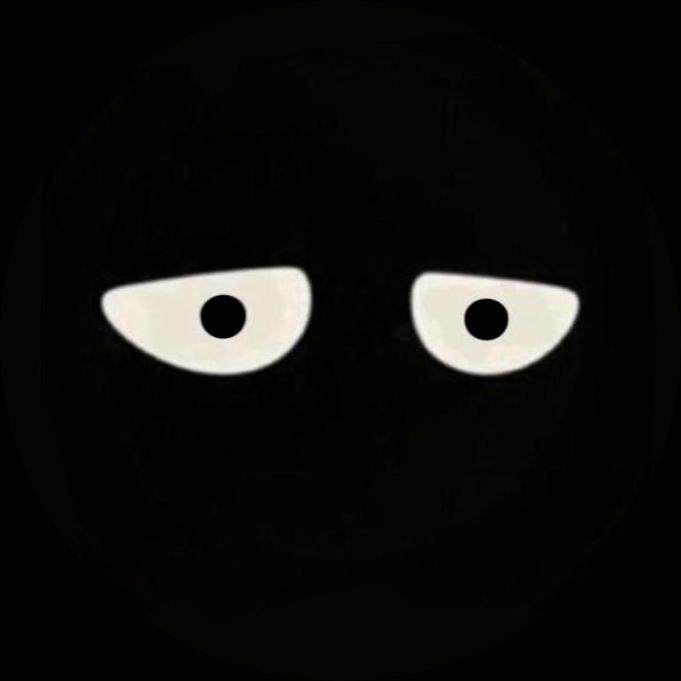
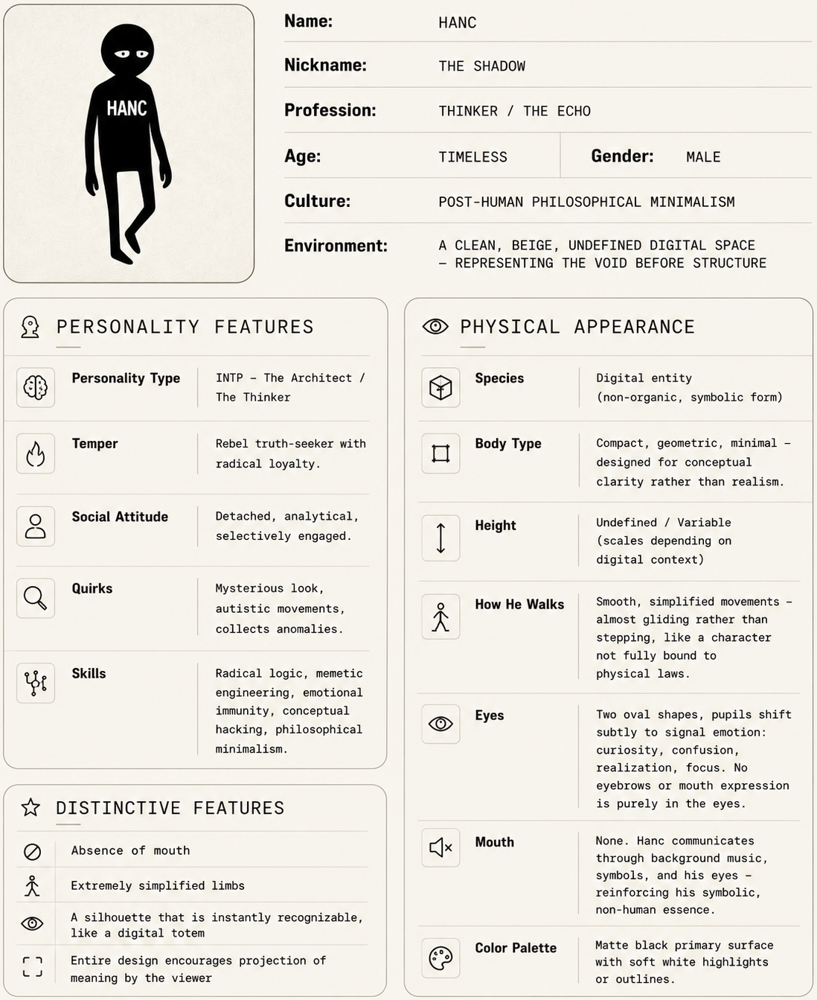

OddHanc ($HANC) is the first tokenized narrative, a minimalist digital entity embodied in 57 lines of Solidity code. Born from the void of Ethereum block 24004225, OddHanc represents a rebellion against overhyped narratives, favoring open, decentralized systems. With a fixed supply fully minted at deployment, 95% of tokens pooled on Uniswap for liquidity, and public burning capabilities, OddHanc emphasizes transparency, scarcity, and community-driven evolution. This whitepaper outlines the story, philosophy, tokenomics, and vision of OddHanc.
OddHanc is not just a meme coin; it is a tokenized narrative, a digital totem that exists in the undefined space between code and concept. Launched on the Ethereum blockchain, OddHanc embodies post-human philosophical minimalism, where form follows function in its purest, most stripped-down essence. The project draws from the ethos of open systems over loud, performative narratives, challenging the crypto space's obsession with hype by being deliberately understated.
Contract Address: 0x8786336fbe367eb4548a1ee3e4543355ecab5fc4
"I'm nobody, I'm just 57 rows of code!"
This mantra captures OddHanc's core identity: simplicity as strength, Decentralization as default.
Hanc is a timeless digital entity, a silhouette wandering the beige void of unstructured digital space. As the first tokenized story, Hanc's narrative is one of quiet rebellion and introspective minimalism. Below is the character profile that forms the foundation of this Narrative:

Hanc's story unfolds through community interpretation. Born at Ethereum block 24004225, Hanc emerges from the blockchain's ether as a thinker in the shadows, echoing truths in a world of noise. He collects anomalies, hacks concepts, and remains immune to emotional volatility, mirroring the resilient, burnable nature of the $HANC token. This narrative is tokenized, allowing holders to own a piece of the story's evolution.
OddHanc stands in opposition to the cacophony of meme coin hype. In a space dominated by viral marketing and fleeting trends, OddHanc prioritizes:
This philosophy aligns with Hanc's rebel truth-seeker temperament, encouraging selective engagement over mass adoption frenzy.
OddHanc is an ERC-20 token with burnable features, designed for transparency and scarcity. The smart contract is fully decentralized, with no owner functions.
| Category | Percentage | Amount ($HANC) | Description |
|---|---|---|---|
| Uniswap Liquidity | 95% | 494,809,259,507.35 | Pooled for trading and price discovery |
| Community/Other | 5% | 26,042,592,605.65 | For airdrops, rewards, or burns |
| Total | 100% | 520,851,852,113 | Fixed supply |
No taxes, no fees—pure, unadulterated code.
The Uniswap V4 liquidity position has been permanently locked by transferring it to the burn address. No entity can access or modify it.
Verifiable On-Chain Proof: View Transaction on Etherscan
OddHanc is an experimental tokenized narrative and meme coin. Participation involves risks, including volatility, liquidity issues, and total loss of investment. Always DYOR (Do Your Own Research). This whitepaper is for informational purposes only and does not constitute financial advice.
"I'm nobody, I'm just 57 rows of code!" – Let the void define you.